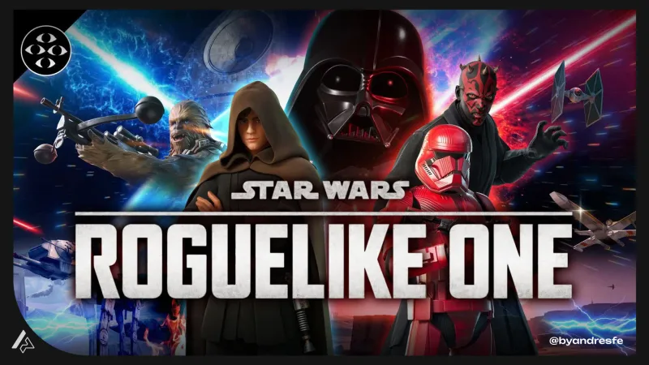
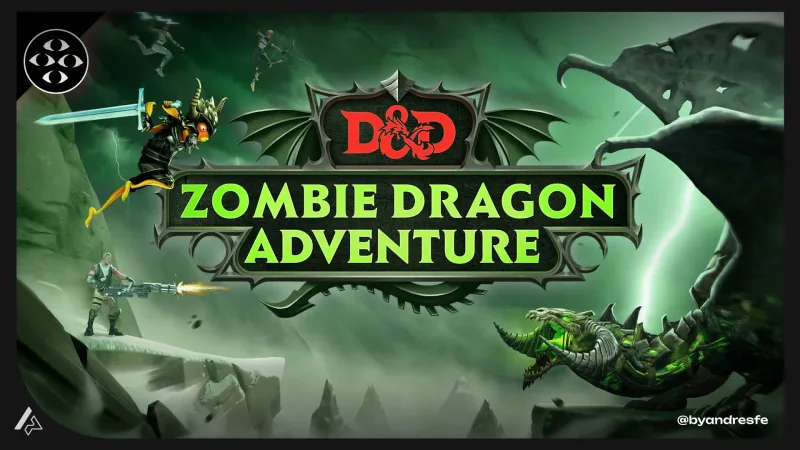
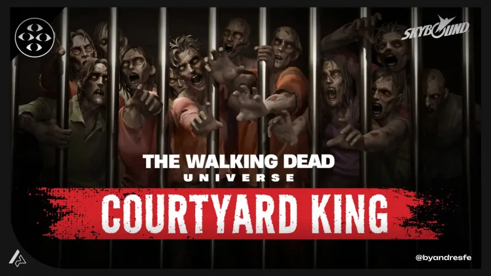
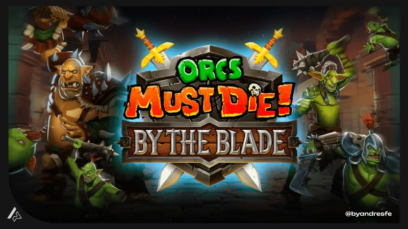
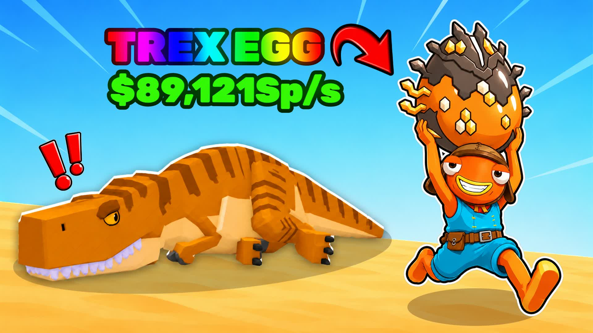
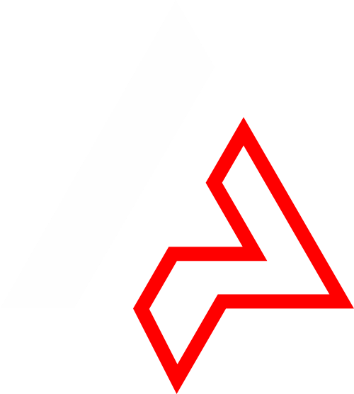

60 segundos
para que quieran seguir jugando
7 decisiones de UX para convertir un prototipo en una experiencia clara, jugable y memorable.
Andrés Felipe Pisso / Game UX/UI Lead
¿Qué harías primero?
Una respuesta en el chat. Sin explicaciones.
Recoger un cristal.
Abrir la puerta
del faro.
El equipo ya conoce el objetivo.
Quien llega apenas lo está construyendo.
No es una regla.
Es una ventana para observar.
¿Inicia una acción?
¿Entiende el resultado?
¿Encuentra una razón para continuar?
Bogotá, Colombia
Andrés Felipe
Pisso
UX Lead en Teravision Games. Docente de UX y Jugabilidad en la CUN.






No toda dificultad es diseño.
Encontrar una ruta.
Adivinar cómo moverse.
7 preguntas que el jugador
se hace sin decirlas.
¿Qué intento conseguir ahora?
¿Con qué acción puedo empezar?
¿Qué acaba de pasar?
¿Qué es lo importante aquí?
¿Qué regla necesito en este momento?
¿Qué pasó y cómo vuelvo a intentar?
¿Puedo percibir y ejecutar lo esencial?
Vamos a arreglar Faro en vivo, una por una.
¿Qué intento conseguir ahora?
Una acción inmediata conectada con una consecuencia visible.
¿Con qué acción puedo empezar?
Botón + verbo, cerca de la interacción. Una misma acción mantiene su lógica.
Del toque al gamepad.
En táctil, cada menú era un botón en pantalla. En consola, cada menú necesitó un lugar en el control.
Más velocidad.
Menos control.
Con mucha velocidad comprada, recorrer las tiendas físicas se volvía difícil.
Slow Mode era un toggle en el HUD. En Fortnite ese toggle no existe: pasó a Settings.
Lo prendían solo en la safe zone y lo apagaban al salir. Ahora eran 8 pulsaciones en menús, cada vez.
Un tercer estado: Safe zone only. El juego hace el cambio por ti.
¿Qué acaba de pasar?
La acción actualiza un estado y señala el siguiente paso.
Primero qué ocurrió.
Después cómo se siente.
✕ Se siente bien. No sé qué pasó.
✓ Claro. Un poco seco.
✓ Claro y se siente bien.
Todo compite.
La primera acción tiene prioridad.
Tienda, racha y mapa esperan a que el jugador los necesite.
¿Qué regla necesito en este momento?
Moverse
Recoger
Usar
Cada regla nueva llega con una oportunidad segura de practicarla.
Una regla a la vez, dentro del mundo.
"Move around the square"
Primero solo moverse. El objetivo flota frente al jugador.
"Look around"
Después girar. El glifo del control va junto a la instrucción.
"Grab"
Botón + verbo sobre el objeto que se agarra.
"Use your sword · Hits 0/5"
Objetivo + contador: el mismo patrón que CRISTAL 0/1.
¿Qué pasó y cómo vuelvo a intentar?
Una causa comprensible y una salida cerca del problema.
¿Puedo percibir y ejecutar lo esencial?
Simulación sin color — la columna izquierda dejó de comunicar.
Cinco minutos. Cero presupuesto.
Sin audio
Las señales esenciales siguen disponibles.
Sin depender solo del color
Texto, forma o estado explican la diferencia.
Con cada dispositivo anunciado
Los menús y la acción principal se pueden operar.
En la pantalla final
Texto legible y control sobre movimiento y efectos.
Claro no basta.
Tiene que valer la pena.
Una recompensa que se ve
La siguiente meta, ya a la vista
AntesEntrada sin guía.
DespuésPrimera acción comunicada.
Mismo arte. Mismo código. Cuatro textos.
¿Dónde se queda
detenido tu jugador?
La acción que esperabas.
Lo que hizo en su lugar.
La señal que cambiarías.
Un playtest que cabe
en diez minutos.
Lo que viste ≠ lo que crees.
| Observación | Hipótesis | Cambio a probar |
|---|---|---|
| Presionó E tres veces. | La confirmación pasó desapercibida. | Mostrar el nuevo estado junto a la acción. |
| Llegó a la puerta sin cristal. | La condición para abrirla era poco clara. | Explicar qué falta y dónde encontrarlo. |
Qué corregir con el
tiempo que queda.
Lo que impide jugar
Entrar, leer, operar la acción o recuperar el control.
Lo que genera duda
Objetivo, estado de la acción y siguiente paso.
El acabado que puedes verificar
Efectos y ajustes visuales sin romper la build.
En 60 segundos, tu jugador…
¿Reconoce una primera acción?
¿Puede practicar la regla nueva?
¿Sabe cómo ejecutarla?
¿Sabe cómo volver a intentar?
¿Entiende lo que ocurrió?
¿Puede percibir y operar lo esencial?
¿Encuentra la señal importante?
byandresfe.com/
speaking/60s
Gracias
por sumarte.
Si puedes aportar, usa el enlace oficial que comparte la organización en el chat.
byandresfe.com / @byandresfe
¿Preguntas?
Escríbelas en el chat o reacciona con ✋ para tomar la palabra.
Síntoma → dónde mirar.
| No empieza | 01 Objetivo · 02 Controles · disponibilidad |
| Repite la acción | 03 Feedback · estado · fallo técnico |
| Pierde el siguiente paso | 04 Jerarquía · 05 Aprendizaje |
| Solo algunos pueden hacerlo | 07 Accesibilidad · dispositivo |
Lecturas.
Nielsen Norman Group
Heurísticas de usabilidad · Reconocimiento vs recuerdo · Divulgación progresiva · Pensamiento en voz alta.
Xbox Accessibility Guidelines
101 Texto · 103 Canales de información · 107 Input · 117 Movimiento y distracciones visuales.
byandresfe.com/notes
Lecciones de UX en UEFN · Checklist de accesibilidad · Claridad de interfaz en VR.
Charla y diseño
Andrés Felipe PissoGame UX/UI Lead · @byandresfe · byandresfe.com
Evento
Cali Game JamGame jam solidario
Casos reales
Steal an EggFortnite · isla 6898-9449-5160
Orcs Must Die! By the BladeRealidad virtual
Video de gameplay VR
A Wolf in VRyoutube.com/watch?v=as71Dzqvzjc
Ejemplo "Faro"
Concepto, HUD y animación: Andrés Felipe PissoFondos, personaje y vehículos generados con IA y dirigidos por el autor
Referencias
Nielsen Norman GroupHeurísticas de usabilidad · divulgación progresiva
Xbox Accessibility Guidelines101 · 103 · 107 · 117
Tipografías
Play · JetBrains Mono
Marcas
Star Wars, Dungeons & Dragons, The Walking Dead, Orcs Must Die!, Fortnite y Roblox pertenecen a sus respectivos dueños.
Gracias
A quienes aportaron y a quienes hicieron un juego este fin de semana.Sigue corriendo.

BYANDRESFE// 60s.sys